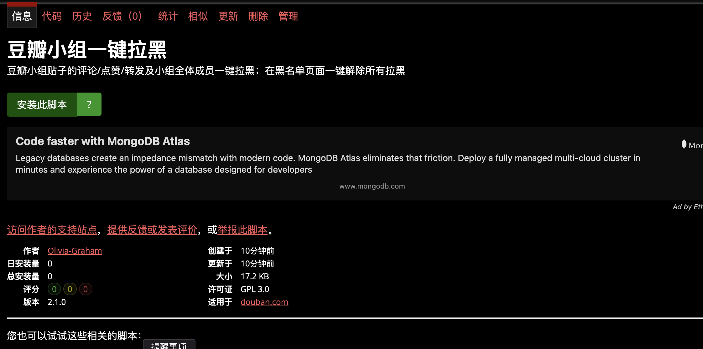
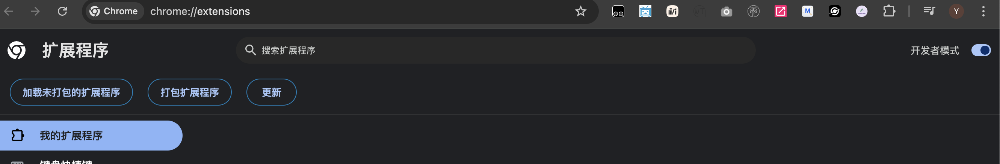
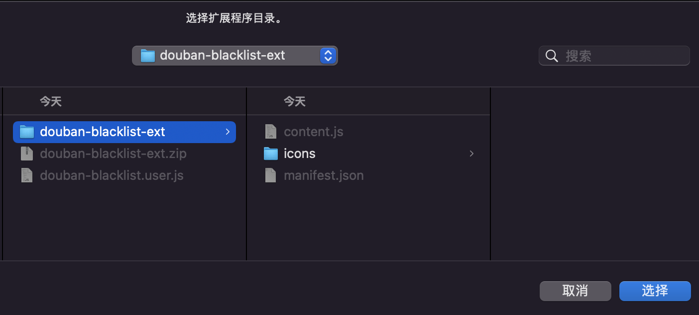
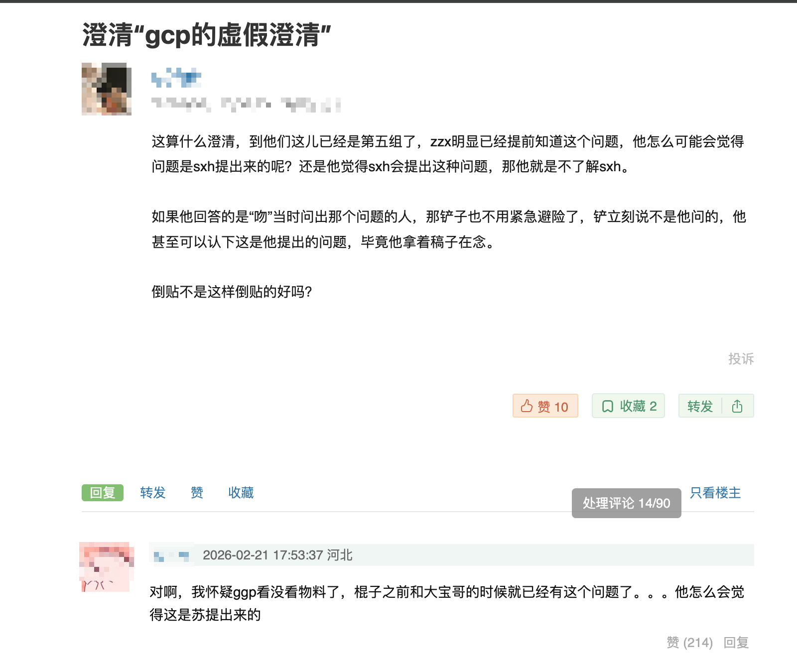
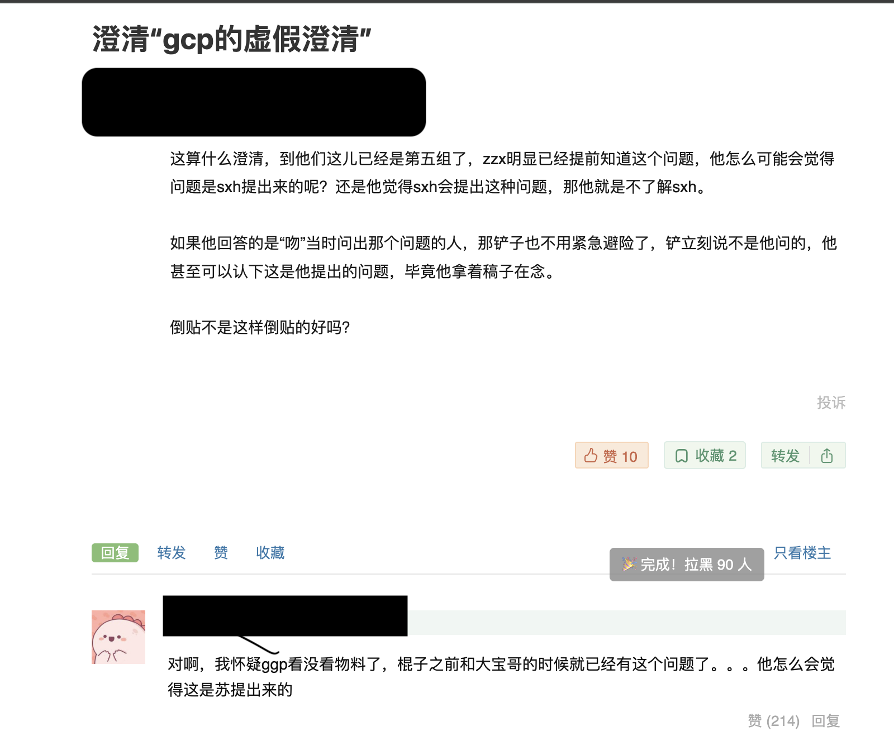
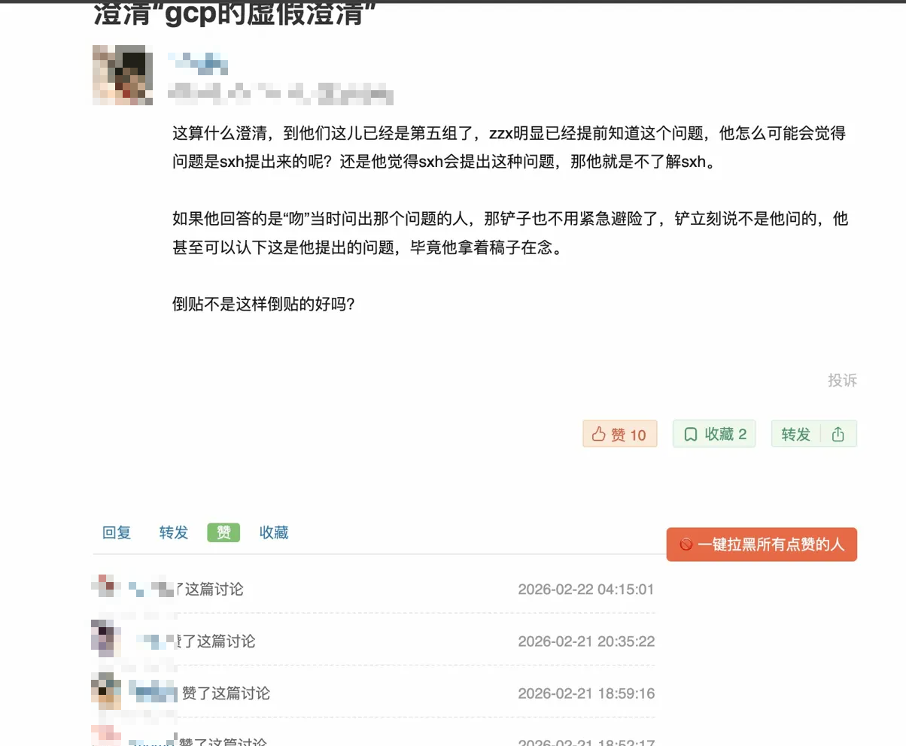
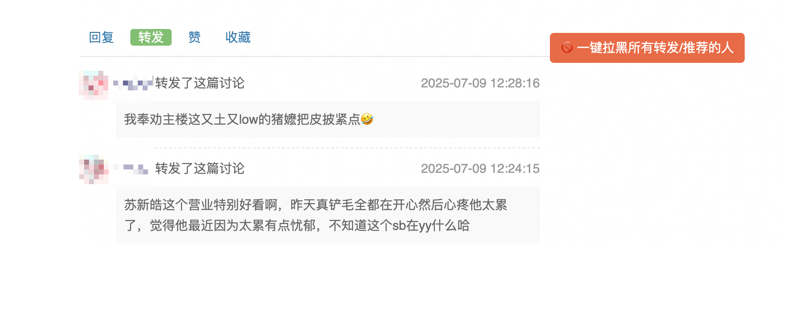
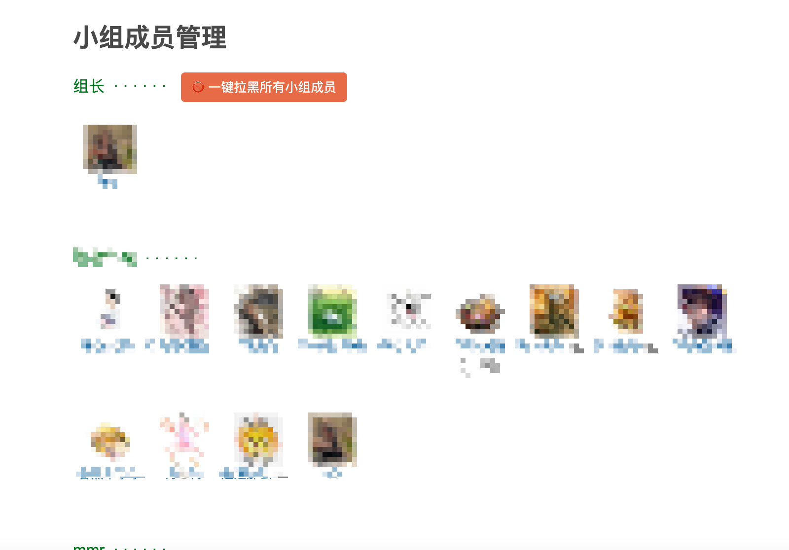
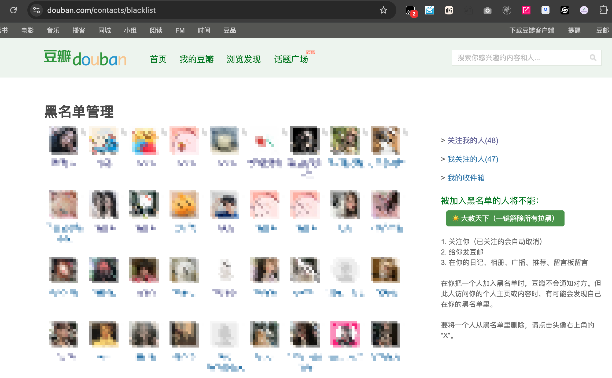

1先安装 Tampermonkey 油猴插件。去 Chrome 或 Edge 的扩展商店搜索「Tampermonkey」安装就行，就像装普通插件一样。
2去 Greasy Fork 页面点「安装此脚本」，油猴会自动弹出安装确认页，点确认就装好了。

1下载 douban-blacklist-ext.zip，解压到一个你记得住的地方（比如桌面）。解压后的文件夹不要删也不要移动，删了插件就失效了。
2在浏览器地址栏输入 chrome://extensions（Chrome）或 edge://extensions（Edge），回车进入扩展管理页面。打开右上角的开发者模式。

3点「加载未打包的扩展程序」，在弹出的文件夹选择窗口里，找到并选中解压出来的 douban-blacklist-ext 文件夹，点「选择」。

安装好之后刷新豆瓣页面，插件会自动识别你在哪个页面，然后在合适的位置出现一个 🚫 按钮，点一下就开始运行。
①拉黑评论者：打开帖子，默认就是评论页，右侧会出现按钮。点击后按钮变成「处理评论 xx/90」，等它跑完就行。


②拉黑点赞的人：在帖子页面点「赞」这个 tab，切换过去就会出现按钮。

③拉黑转发的人：在帖子页面点「转发」tab，同样会出现按钮。

④拉黑小组所有成员：进入小组 → 点「成员」→ 页面顶部会出现按钮。

⑤大赦天下（解除所有拉黑）：进入 douban.com/contacts/blacklist 黑名单页面，右侧会出现一个绿色按钮，点一下自动解除所有人。

?按钮没出现怎么办？
刷新一下页面，等页面完全加载完再看。如果还没有，检查一下插件有没有装好、有没有开启。
?跑到一半卡住了？
可能触发了豆瓣的验证码，页面某个地方会有验证码弹窗，手动完成之后重新点按钮继续。
?拉黑会通知对方吗？
不会，豆瓣拉黑是静默的，对方不知道。
?会不会被封号？
脚本设置了随机延迟模拟人工操作，正常使用风险不大，但批量操作几百人之后建议休息一下再继续。